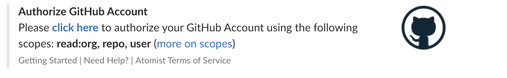
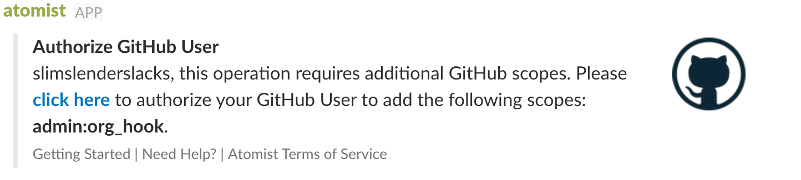

Using Atomist
This is a step by step guide to setting up Atomist’s built-in automations to see and control your development flow from Slack. To write your own automations, see the full developer guide.
Slack¶
Enroll Slack bot¶
Click the “Add to Slack” button below to invite the Atomist bot into your Slack team.

Slack’s default configuration allows all team members to add new Slack applications. However, your team’s admins may decide to restrict the set of applications that can can be added in your team. The permissions management page has an “Approved Apps” setting to control this.
If your team requires approval for new apps and you’re not a Slack administrator, Slack helps you request approval from your Slack team’s administrators to install the Atomist application.
Currently the authorization process asks you to authorize two things:
- The Atomist app adds a bot user named “@atomist” to your team.
Your team can
\invitethe Atomist bot to channels to access the full functionality of Atomist. Bot users cannot create channels, cannot join channels unless they are invited by a non-bot channel member, and cannot see messages in channels where they are not a member. - Atomist requests a scope called “Modify public channels”. This scope allows Atomist to help you setup channels. For example, when you create a project in a new GitHub repository, Atomist can create a Slack channel to go with it.
Note
The Atomist app creates new channels on behalf of the user who first authorizes Atomist.
Slack team ID¶
Some operations, like connecting your CI with Atomist, need you to pass
in your Slack team ID. To get your Slack team ID, send team to the Atomist
bot.
you> /invite @atomist
you> @atomist team
atomist> The Slack id for team your-slack-team is T1L0V3JTP
16 of 24 users in this team have authorized themselves
Removing Atomist from Slack¶
You can remove the bot from all your channels instantly by revoking access to the “Atomist” application. We certainly hope it doesn’t come to this!
The App Manage page has a “Remove App” button at the bottom of the page. Please let us know if there’s anything we can do to clarify how the bot works within your Slack team.
GitHub¶
Atomist helps you work with GitHub in two ways:
- By enabling webhooks, your automations can react to GitHub activities such as pushes, pull requests, or issues.
- Automations can expose commands that access GitHub through the v3 api, authorized by OAuth tokens. Each user on your team must independently authorize Atomist – this means that your users remain within the boundaries of the existing GitHub security model. Atomist acts on behalf of your users, not instead of them.
GitHub user authorization¶
When the Atomist bot first arrives in a team, it will send a direct message to the authorizing user, requesting that they authorize Atomist to access GitHub on their behalf.

This same dialog will be shown to users anytime Atomist detects that an automation needs to access GitHub as that user. Every user on the team must individually opt in. Atomist will display this option each time an un-authorized user runs a command that requires a GitHub authorization. Users can ask for their current GitHub authorization status by running:
you> @atomist github
Atomist will send a direct message to this user with their current GitHub authorization status.
Organization webhooks¶
GitHub organization members that have the owner role, are
allowed to configure organization webhooks. This is convenient
because it only has to be configured once; however, you will require a
user who has the Owner role in your GitHub organization.
you> @atomist enroll org
When you choose to enroll a GitHub organization, you will most likely be prompted to authorize a new scope (Atomist only asks for new scopes when explicitly required). The admin:org_hook is required when enrolling a new GitHub organization.

If you are a member of more than one GitHub organization, Atomist will ask you to choose which organization to enroll.
Finally, you will be presented with a button to configure the organization webhook.
Repository webhooks¶
If your team does not use a GitHub organization account, you can choose to configure webhooks on individual repositories owned by your user account.
you> @atomist install webhook
The bot now asks for the owner of the repository. This question is
skipped if there is only one valid choice (your user account). Next the bot
asks you to select the repository to receive the new webhook.
Linking Slack & GitHub¶
Now that you have Slack and GitHub connected with Atomist, you should
“link” GitHub repositories with Slack channels so you can see and
control your project’s activity from Slack. All you need to do is
invite the Atomist bot to a Slack channel and then send it repo.
/invite @atomist @atomist repo
The bot will open a thread and ask you what GitHub repository you want to link to the channel. If you added an organization webhook, you can link any repository in your GitHub organization. If you added webhooks to individual repositories, you will only be able to link those repositories.
Continuous integration¶
Atomist natively supports several continuous integration (CI) platforms, listening for CI events, correlating them with the commits that triggered the build, and showing contextualized notifications in a Slack channel linked to the repository. To enable this capability, just add the desired Atomist CI webhook URL to your CI configuration.
Note
In the examples below, replace TEAM_ID with your Slack team ID.
CircleCI¶
To send events from CircleCI to Atomist, add the following
snippet to your .circleci/config.yml configuration file.
notify: webhooks: - url: https://webhook.atomist.com/atomist/circle/teams/TEAM_ID
Jenkins¶
You can send events from Jenkins to Atomist using
the notification plugin, configuring it to send its
payload to
https://webhook.atomist.com/atomist/jenkins/teams/TEAM_ID.
If you configure your build using a Jenkinsfile, add
these functions to your Jenkinsfile. Don’t forget to replace
TEAM_ID with your Slack team ID.
import groovy.json.JsonOutput def getSCMInformation() { def gitUrl = sh(returnStdout: true, script: 'git config --get remote.origin.url').trim() def gitSha = sh(returnStdout: true, script: 'git rev-parse HEAD').trim() def gitBranch = sh(returnStdout: true, script: 'git name-rev --always --name-only HEAD').trim().replace('remotes/origin/', '') return [ url: gitUrl, branch: gitBranch, commit: gitSha ] } def notifyAtomist(buildStatus, buildPhase="FINALIZED", endpoint="https://webhook.atomist.com/atomist/jenkins/teams/TEAM_ID") { def payload = JsonOutput.toJson([ name: env.JOB_NAME, duration: currentBuild.duration, build: [ number: env.BUILD_NUMBER, phase: buildPhase, status: buildStatus, full_url: env.BUILD_URL, scm: getSCMInformation() ] ]) sh "curl --silent -XPOST -H 'Content-Type: application/json' -d '${payload}' ${endpoint}" }
Then call notifyAtomist when the build starts (in the first
stage) and ends (in the post block), sending the appropriate
status and phase.
- Start:
notifyAtomist("STARTED", "STARTED") - Succesful:
notifyAtomist("SUCCESS") - Unstable:
notifyAtomist("UNSTABLE") - Failure:
notifyAtomist("FAILURE")
Travis CI¶
To send events from Travis CI to Atomist, add the
following snippet to your .travis.yml configuration file.
notifications: webhooks: urls: - https://webhook.atomist.com/atomist/travis/teams/TEAM_ID on_success: always on_failure: always on_start: always on_cancel: always on_error: always